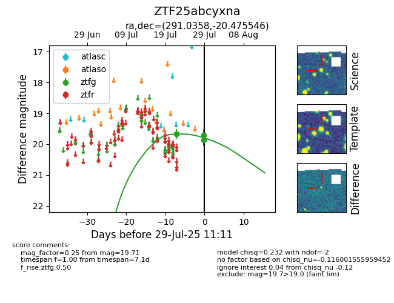

Target ZTF25abcyxna at 2025-07-29 11:11, see:
FINK: fink-portal.org/ZTF25abcyxna
Lasair: lasair-ztf.lsst.ac.uk/objects/ZTF25abcyxna
ALeRCE: alerce.online/object/ZTF25abcyxna
alt names
ZTF25abcyxna (ztf,fink)
coordinates:
equatorial (ra, dec) = (291.0358,-20.47555)
galactic (l, b) = (17.8108,-16.14590)
photometry
last ztfg=19.71
3 ztfg detections
